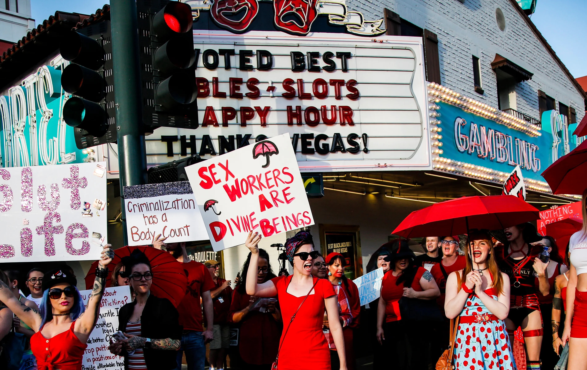
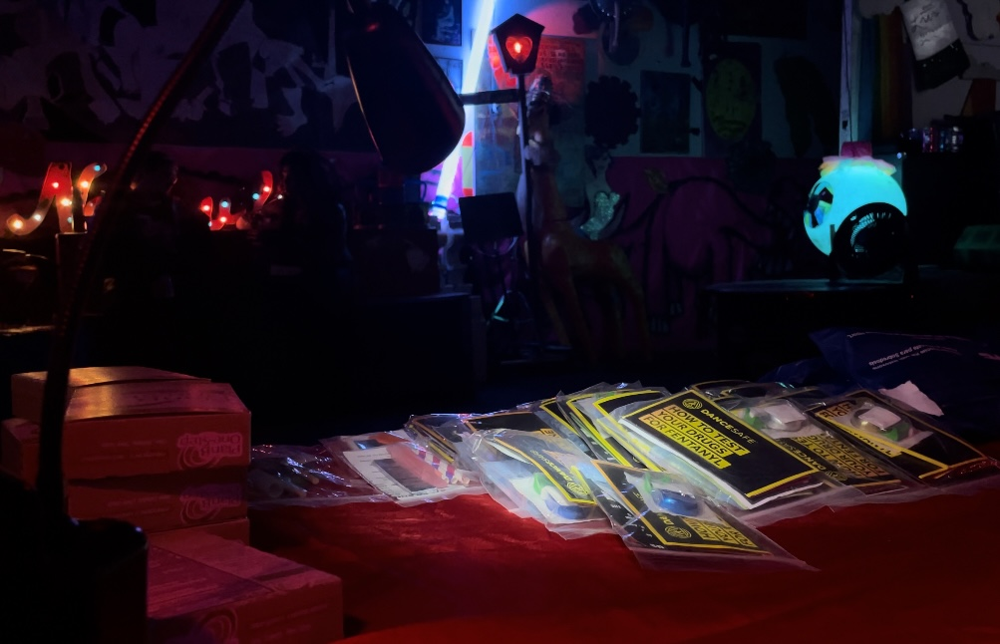
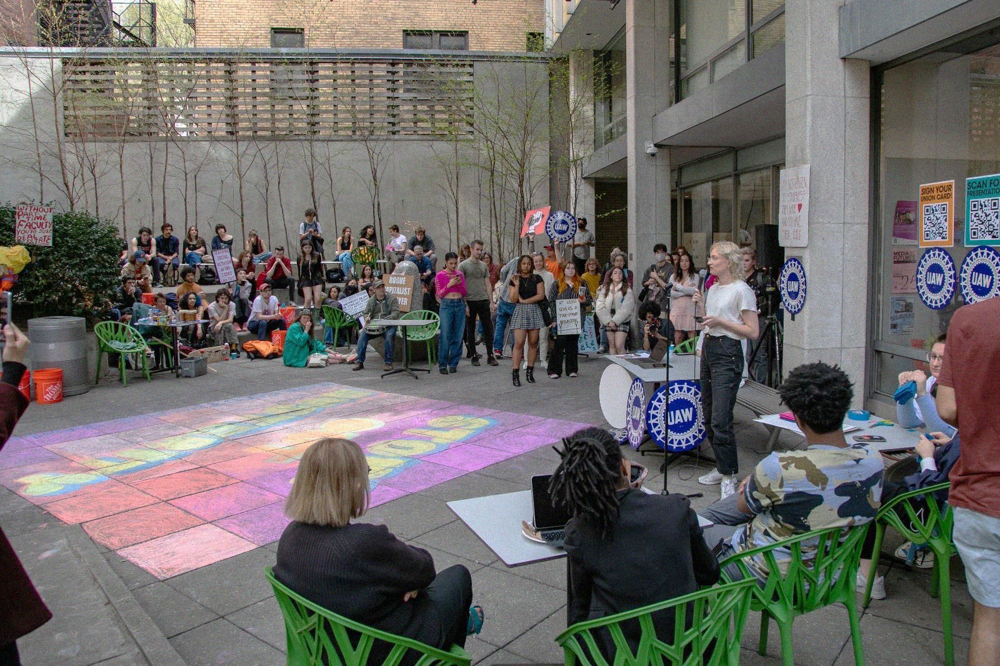

✣ About ✣
Aarya Kini is a designer and journalist from Singapore, based in Brooklyn, NY.
She is currently making things at Partner & Partners↗, working across print, identity, interactive, and exhibition projects, and is most passionate about research-driven work that meets the needs of communities regardless of form or scale.
She strongly believes that change happens outside the studio, and is always thinking about how effective design can amplify working-class movements around the world.
↑ Summer sunset from the roof of my favorite apartment I lived in in NYC (2023).
When I'm not at work, you can find me
reading↗,
writing, sometimes dancing↗, or
watching a new documentary↗.
*Please email for a resumé / PDF portfolio!*
-- Are.na↗
-- Instagram↗
-- LinkedIn↗
-- Email Me↗
This site was handmade with love and patience by Aarya Kini. Last updated 24 Dec, 2025.
✣ Writing ✣
-
Capstone project for my Journalism BA about the challenges that entertainment sex workers face in forming and sustaining unions in the United States.
-- From the Pole to the Picket↗↑ Demonstrators chant in support of decriminalizing sex work during a rally held in Las Vegas on June 2, 2019. Photo from the Associated Press.
-
New School Free Press
From January 2024 to May 2025, I was the Editor-in-Chief of the New School Free Press, The New School's only independent student run newspaper. During my time at the paper, we covered multiple union strikes, pro-Palestine encampments and demonstrations, university austerity measures, misuse of funds on the Student Senate, sexual harassment and Title IX cases and more. Here's some of the pieces I wrote during my tenure:
-- Federal government terminated visas of four international students at The New School↗↑ The paper's most-read story of all time, and a story I broke before the university provided any communication about the matter.
-- Previously terminated SEVIS records of four international students at TNS have been reinstated↗-- An open letter to President Shalala: Your actions were a betrayal to the New School community↗ -- 45 students from the Gaza Solidarity Encampment were arrested this morning↗ -- Students form a “human blockade” in front of the UC after Board of Trustees failed to hold a divestment vote↗ -- Harm Reduction at TNS: Keeping you safe if you use drugs↗
↑ Students, staff, and faculty gathered in front of The New School's University Center at 63 Fifth Avenue are met with counter-protestors and various NYPD units (May 2024).
↑ A spread of harm reduction supplies on a table at Rubulad, NYC (Oct 2023).
-
During my time in college, I (along with some friends) ran a coalition group called the Student Faculty Solidarity Alliance that organized students to support our part-time faculty union as they went on the longest adjunct faculty strike in US history in the process of negotiating a better contract with The New School.
At the time, I was also employed in various admin offices across the university. The momentum from this strike compelled us student workers to seek out unionization for ourselves, which resulted in the formation of the New Student Workers Union in early 2023.
While our union is still fighting for official reognition, a process that has not been without its several challenges, I wrote this op-ed when we officiated our Organizing Committee as a reflection of how legal precedent, public sentiment, and the organizing tools at students' disposal, all favor student employees, especially undergraduates, forming their own unions.
-- If You Are a Student Worker, You Deserve a Union↗↑ Community gathered at an anti-austerity rally and teach-in hosted by the New Student Workers Union, along with other members of ACT-UAW Local 7902 (April 2023).
PS: I also did the branding for the union! One of my first major freelance projects ever. It meant so much to be able to design an identity for an organization that my friends and I care so much for and are so deeply invested in.
✣ An Assortment of Things I've Made ✣
↑ A contemporary remake of a poster that has hung in my maternal grandmother's house for as long as I can remember.

↑ A compendium of three texts on the politics of graphic and communication design.

↑ My journalism capstone project in zine form.
Test It Before You Ingest It
The following 3 images are part of my Communication Design thesis project titled Test It Before You Ingest It.The project consists of a range of resources in different forms, intended to act as a primer on harm reduction for young, recreational drug users. You can view the full project at thesis.aaryakini.com↗.

↑ Three books presenting the fundamental principles of harm reduction through the voices of experts, and a zine with resources to learn more about the concept.

↑ A close up of posters with infographics related to safe drug use, like a combo chart identifying which substances are safe to mix.
↑ A palm-sized guidebook containing quick facts for 15 common party drugs and concluding with short articles on safe consumption and risks to be aware of.

↑ Pages from a zine about what home means to me.
↑ A short video I made capturing the vibes when a couple friends and I tabled at the 2024 Brooklyn Art Book Fair.
✣ Links (2026) ✣
A running list of links to interestings things I find this year. This columnm will only display the 20 latest items I've added to the list, but you can view the full catalog on are.na here↗.